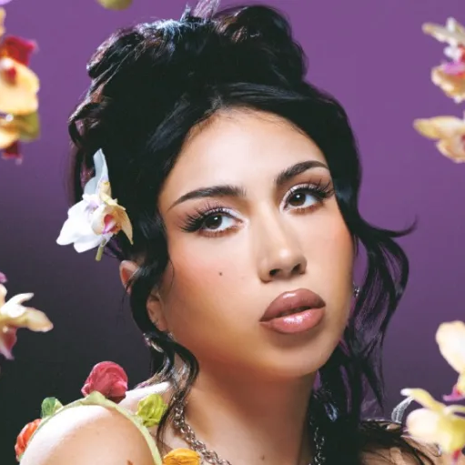

ABOUT
Karly Marina Loaiza (born July 17, 1994), known professionally as Kali Uchis (OO-cheess), is an American singer and songwriter. After releasing her debut mixtape Drunken Babble (2012), she gained recognition for her debut extended play, Por Vida (2015). She signed with Virgin EMI Records to release her debut studio album Isolation (2018), which peaked at number 34 on the Billboard 200 and saw widespread acclaim. She then signed with Interscope Records to release her second studio album and first Spanish-language project, Sin Miedo (del Amor y Otros Demonios) (2020). Uchis was featured on Kaytranada's 2019 single "10%", which won Best Dance/Electronic Recording at the 63rd Annual Grammy Awards. Her other accolades include an American Music Award, two Billboard Music Awards, and a nomination for a Latin Grammy Award.
It spawned the single "Telepatía", which first gained virality on TikTok and marked her first entry on the Billboard Hot 100 at number 25, also receiving double platinum certification by the Recording Industry Association of America (RIAA). Her third studio album, Red Moon in Venus (2023) peaked at number four on the Billboard 200, while her fourth album and second Spanish-language project, Orquídeas (2024), peaked at number two.
Kali Uchis is openly bisexual, something she has often reflected in her music and public image. She has been in a relationship with American rapper Don Toliver since 2020. In January 2024, she announced that she was expecting her first child with Toliver via the music video for her songs "Tu Corazón Es Mío" and "Diosa". She gave birth to a son in March.